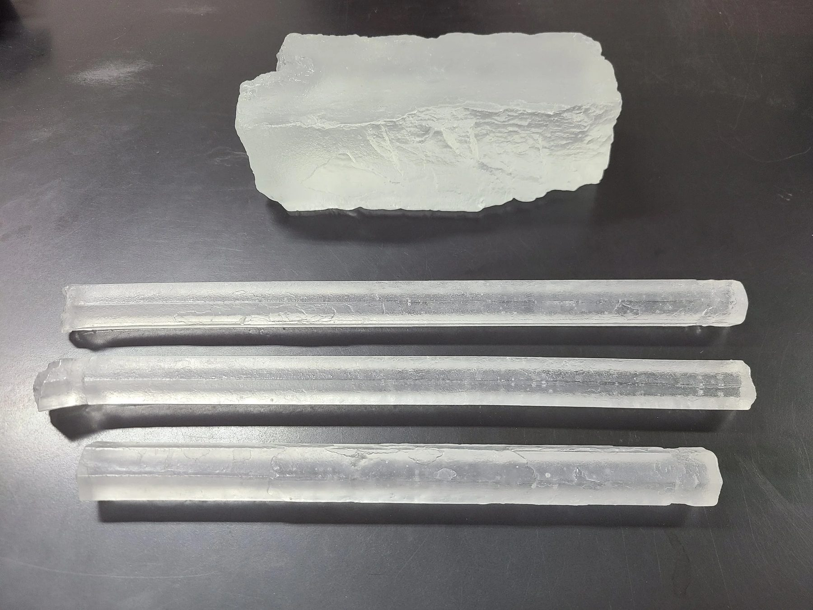
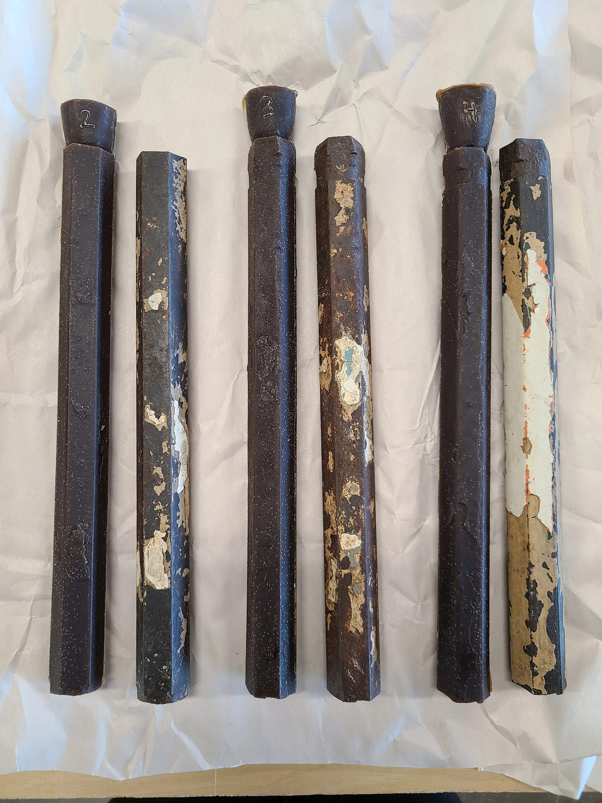
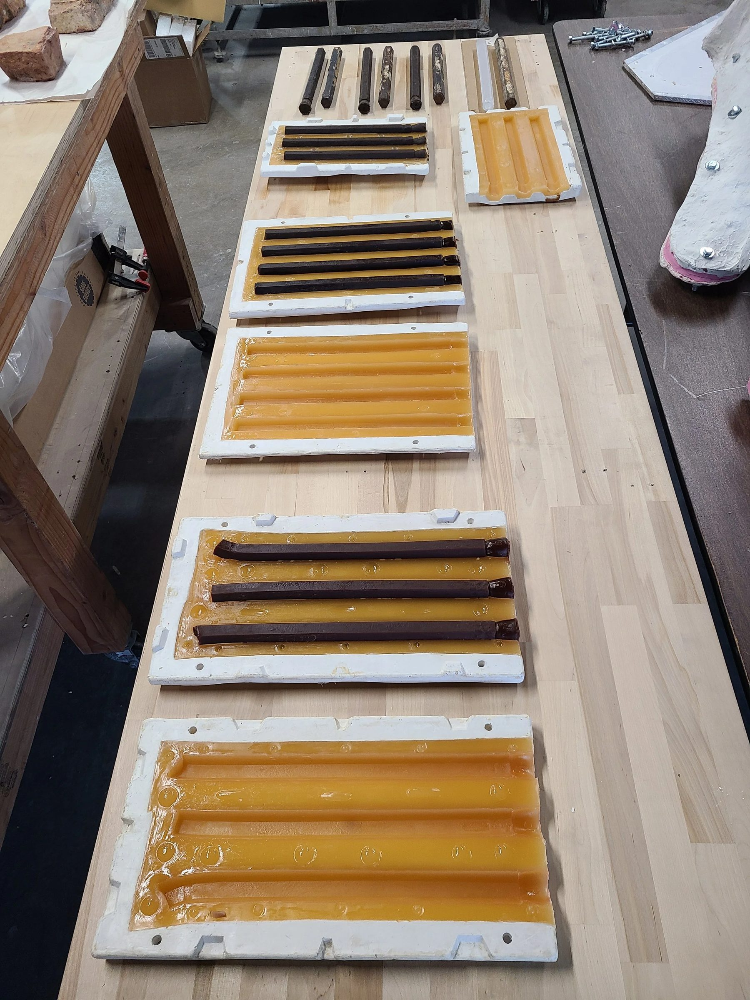
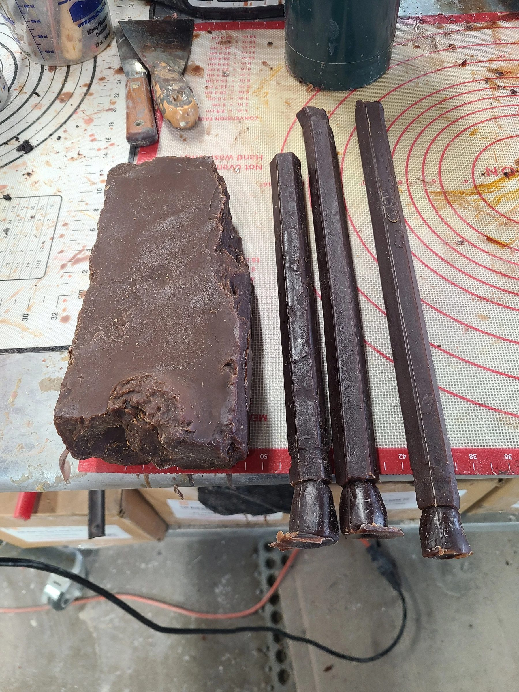
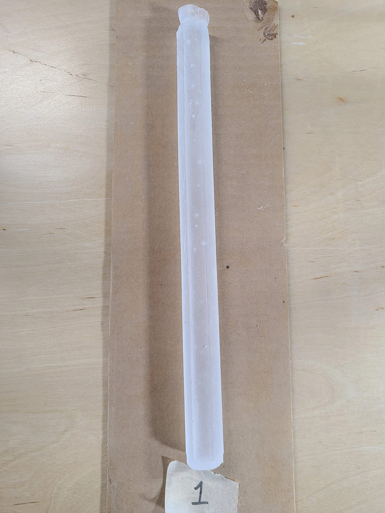
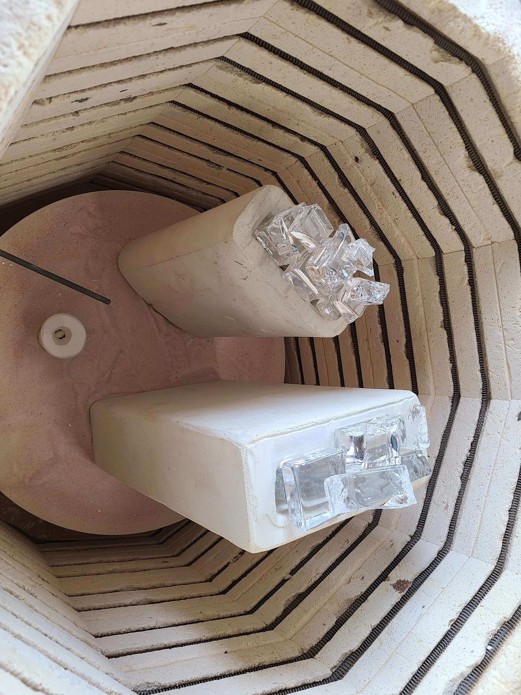
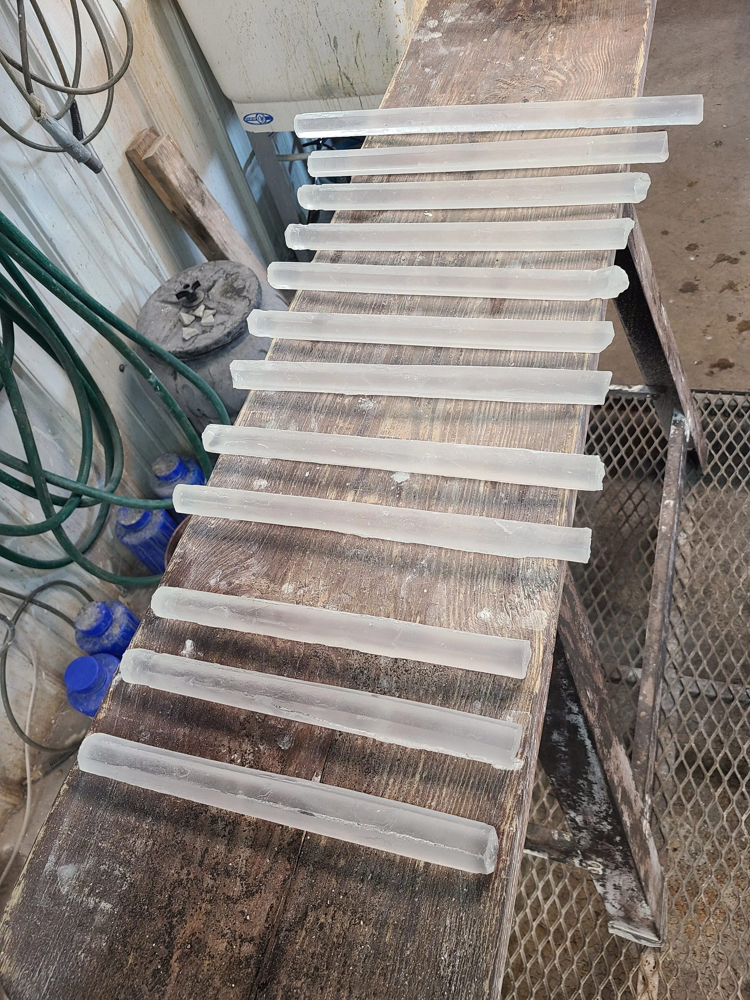
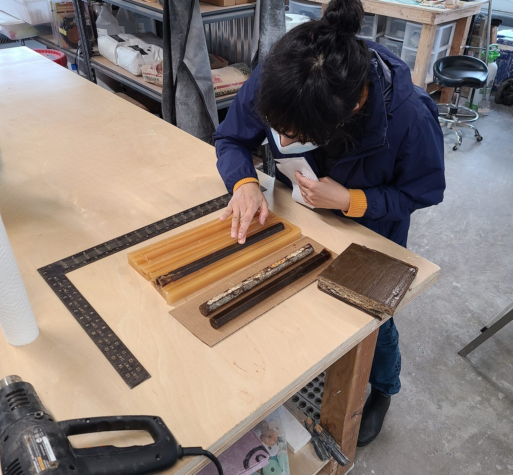

Glass / 2023 / Chicago, IL
Jail Debris
Maria Gaspar

Twenty-three cast lead crystal bars and bricks taken from a demolished Chicago corrections facility.
The work
Maria Gaspar's work centers on incarceration. When a Chicago corrections facility was demolished, she collected bars and bricks from it and wanted to give them a new life. Cast in clear lead crystal, objects that were dense, opaque, and heavy with their history let light through and tell their story differently.
The material question
The originals were not to be cleaned up. The bars carried years of paint, layered in steps, one coat for each era that passed. The bricks are porous. Both had to be molded without stripping that history away or letting it bond to the rubber.
The making
We sealed every piece with a natural, water soluble coating that held the paint and patina in place and kept them clear of the mold, took rubber molds, and cast them in lead crystal, polished on selected faces.
In place
“It was eerie to think of their previous lives, where they were, what they held, who they held,” says Ally Reza. “Because it's not really what they held so much as what humans used them to hold.” The work asked for reverence, and care.
Details
- Year
2023 - Location
Chicago, IL - Category
Glass - Materials
Lead crystal, polished
Credits
- Artist: Maria Gaspar
- Glass: Ally Reza
Studio
- ChiLab Studio
- Chicago, Illinois
- Established 2013







Bring us a drawing,
a model, or a hunch.
The studio
Specialty material projects for architecture, interior design, public art, and the fine arts.
ChiLab Studio, Chicago, Illinois. Established 2013.
What we do
- Metal casting
- Glass
- Finishes
- Digital fabrication
- Metal fabrication
- Restoration
- Project management
Contact
info@chilabstudio.com
chilabstudio.com
Instagram @chilabstudio